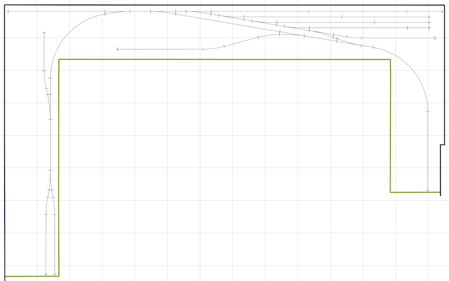

|
With the shelf construction complete, it was time to move on to actually laying track. The first step was to transfer the track centerline onto the plywood subroadbed. Armed with measurements and a handful of full-size printed templates from AnyRail for key locations, I penciled in the entire track plan. I guess I'm a bit obsessive about accuracy so this took me far longer than it probably should have - about 2 full days!

But it was worth it because I ended up with installed track that matched the plan perfectly. I had marked the exact location of every turnout including the throwbars. I extended these markings so they would still be visible after the cork roadbed was in place. To facilitate mounting of the switch machines later, I drilled 1/16" holes through the shelf at each throwbar centerpoint.
My plan included a small creek section with a culvert. This required a cutout in the shelf. Now that I knew exactly where the track was going I was able to add that feature. I had drawn the cutout shape in AnyRail so I printed off a full-size template. Perhaps surprisingly, it lined up perfactly on the shelf surface, so I transferred the shape to the plywood. My son is a wizard with a jigsaw so I recruited him to do the cutting. To give some depth, a large piece of 18mm ply was cut to match, then generously glued and screwed to the underside of the shelf top. Similarly, a creek bottom panel was made from 12mm ply. I had 3D-printed a box culvert and it fit perfectly. After this photo, but before laying the cork roadbed, I painted and weathered the culvert and securely glued it in place with CA glue.
The next step was cork roadbed. After splitting the halves apart, I applied a bead of acrylic caulking to the back of one half, spread it evenly with a flexible, steel putty knife and carefully laid it in place lining it up with the pencil line on the plywood. The other half was done the same and simply butted up against the first half. A small wooden pastry roller from the kitchen (shhhh!) ensured the cork was flat and well-seated, followed by numerous push pins to make sure it stayed in place. Any small gaps that existed near turnouts were filled by cutting small pieces of cork from cutoffs. As an aside, I used acrylic caulking for both the cork and, later, the actual track, because it never fully hardens and remains slightly flexible. Although I am writing this in 2026, the track has shown no signs of expansion or contraction in the two years since installing it. Caulking is also easy to use and quite inexpensive. I started laying cork in the yard area because it was the most complex section. It took a couple of days but then I'm not exactly a quick worker. The rest of the layout was done very quickly.
Whenever you separate a piece of cork into its two halves, one side will have a ridge on the bevelled edge. This will make ballasting a challenge later on, as it will be difficult to conceal it without adding excessive ballast to that side of the roadbed. Once I had all my cork secured, I went over all of it, sanding away that ridge wherever it was noticeable. I had drilled small pilot holes through the shelf at the centerpoint of each throwbar when I transferred the plan to the shelf surface. Now I needed to enlarge those holes to allow for proper operation of the switch machines. From underneath, I drilled upward with a 3/8" brad-point bit just until the bit had entered the cork roadbed - I didn't want a huge hole all the way through the cork surface since the actuator rod is small and only moves side to side. Then, from above, I used a sharp hobby knife to carefully carve a narrow slot (about 1/8") in the cork to accomodate the throw rod.
For some reason, likely oncoming senility, I took very few photos of actually doing the trackwork, so words will have to suffice. Using the photo below as reference, I started where the yard bypass and ladder tracks come off the main (toward top of pic) and worked through all the turnouts and connections (moving downward). Then I installed the main and yard tracks.
Other than turnouts, all my track is flex track. For pieces that aren't full length, I used a Dremel tool to cut the rails and subsequently square up the cut ends. A small jeweller's file was used to remove any burrs. I removed a couple of ties from the ends of each track piece being laid, by cutting through the joining plastic on the underside with a sharp knife. All the ties were kept for future reinstallation. All my turnouts are Peco code 83 and they have a spring built in that keeps the points in place when the turnout is thrown. My turnouts are all controlled by MTB MP1 switch machines so I had to remove the springs from my turnouts before installing them. There are many online tutorials on doing this so I won't go into the details here but it really isn't difficult. If you will throw your turnouts manually then the springs must be left in. On each piece being laid, I installed rail joiners on the end that would mate with the previous piece, ensuring the joiners were a snug fit. I then put a light bead of acrylic caulking on the cork roadbed and spread it evenly with a flexible, steel putty knife (the same way I installed the cork), making sure the cork seam (track centerline) was visible at points to keep the track exactly where it should be. At turnouts, I was careful not to get any caulking near the throwbar area. The track was then laid into place, mating the rail joiners with the previous piece. A straightedge, where appropriate, was used to be sure the track was as straight as possible. The eyeball method was, of course, also frequently used. I kidnapped all the canned goods from the kitchen pantry and used them to weight down the track until the caulking firmed up. The speed of my track laying was dictated by the number of cans I had - I should have gone shopping! Regardless of how you decide to lay track, it is impossible to overemphasize the importance of ensuring that it is laid as perfectly as possible. Imperfections, such as kinks at track joints, uneven rail heights, sudden transitions from straights to curves or from level to incline/decline, etc. will often cause derailments or random car uncoupling. It is far easier to avoid these issues when laying the track rather than try to correct them later.
If you have comments (positive or negative), suggestions, questions, or have found any
|
||
|
|
© Copyright 2026 by Brian Ferguson - All Rights Reserved |